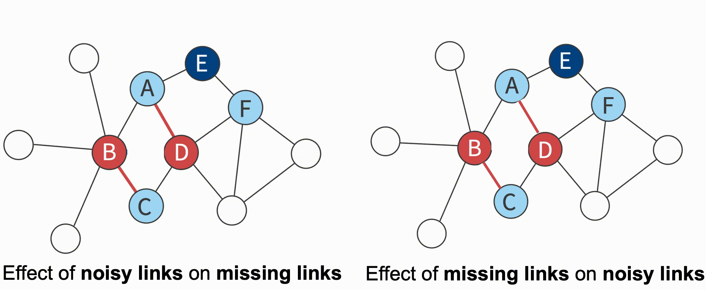

I am a final year Ph.D. candidate in Zhejiang University, co-advised by Yang Yang and Jiangang Lu. I have been visiting UCLA (working with Yizhou Sun) from Nov, 2019 to Apr, 2020.
My research interests include social network analysis, data mining and user modeling, including but not limited to: network denoising, robustness of machine learning models on graphs.
xujr {at} zju [dot] edu [dot] cn
I'm on the job market this year, please feel free to contact me if you are interested in my background!
Contact

Network data in real-world tends to be error-prone due to incomplete sampling, imperfect measurements or even malicious attacks. This in turn results in inaccurate results when performing network analysis or modeling on these flawed networks.
Our research aims to reconstruct a reliable network from a flawed one, a process referred to network enhancement. More specifically, network enhancement aims to detect the noisy links that are observed in the network but should not exist in the real world, as well as to complement the missing links that do indeed exist in the real world yet remain unobserved.
From one perspective, we turns the network enhancement problem into edge sequences generation, and employ a deep reinforcement learning framework to solve it, which takes advantage of downstream task to guide the network denoising process (NetRL, Xu et al, TKDE'21).
From another perspective, we construct a self-supervised learning framework that identifies missing links and nosiy links simultaneously by leveraging the mutual influence of them (E-Net, Xu et al, TKDE'20).
Furthermore, we study the model robutness against adversarial attacks. Our work shows that even without any information about the target model, one can still perform effective attacks (Xu et al, arxiv'20). To handle the adversarial vulnerability problem, we further propose an unsupervised defense technique to robustify pre-trained deep graph models (Xu et al, arxiv'20).

We propose a general game bot detection framework for massively multiplayer online role playing games termed NGUARD+ (denoting NetEase Games’ Guard), which captures user patterns in order to identify game bots from player behavior sequences. NGUARD+ mainly employs attention-based methods to automatically differentiate game bots from humans. We provide a combination of supervised and unsupervised methods for game bot detection to detect game bots and new type of game bots even when the labels of game bots are limited ([Tao and Xu et al, KDD'18];[Xu et al, TKDD'20]).